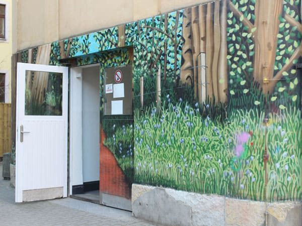

MINT
Roboter „Klaus“ gewinnt Wettbewerb
Zwei Monate Schraubarbeit, ein Kabel zu viel – und am Ende der erste Platz. Die Geschichte hinter dem Pokal.
Hier sammeln wir unsere Geschichten: große Siege, kleine Katastrophen und alles dazwischen. Geschrieben, fotografiert und gestaltet von Schülern der Semper Oberschule Dresden.
Die ersten sechs Beiträge sind Beispiele – sie zeigen, wie das Magazin aussehen wird. Ab dem nächsten Schuljahr schreiben unsere Schüler hier selbst, über echte Ereignisse aus ihrem Schulalltag.
Zwei Monate Schraubarbeit, ein Kabel zu viel – und am Ende der erste Platz. Die Geschichte hinter dem Pokal.

Hinter den Kulissen der Theater-AG: vergessene Requisiten, stille Helden, große Momente.

Die Schulband probt im Musikraum – und man hört sie bis auf den Schulhof. Ein kleiner Mitschnitt.

Kein Grund zur Panik – aber ein Grund, im Chemie-Kabinett immer die Sicherheitsbrille zu tragen. Eine kleine Chronik.

Unser Italien-Austausch: neue Freunde, anderes Essen, dieselbe Sprache der Nervosität vor der ersten Stunde.

Warum der Fußballplatz auf unserem Hof umkämpfter ist als jeder Ligasonntag – und wer ihn wirklich gewinnt.
Das Semper Magazin lebt davon, dass viele Leute mitmachen: Du hast etwas erlebt, fotografierst gern, zeichnest, machst Videos oder willst einfach mal ausprobieren, wie es ist, einen Text zu veröffentlichen? Dann komm in die Schülerredaktion. Keine Vorkenntnisse nötig – wir helfen uns gegenseitig.
Am einfachsten sprichst du eine Redakteurin oder einen Redakteur auf dem Schulhof an, oder du schreibst der Schule eine Mail mit dem Betreff „Semper Magazin“:
„Ich habe in Deutsch noch nie freiwillig mehr als drei Sätze geschrieben. Für dieses Magazin habe ich zwei Seiten geschrieben – über einen Roboter namens Klaus.“– Jonas, 9a
Beim Tag der offenen Tür (voraussichtlich November 2027) führen wir persönlich durchs Haus. Verbindliche Anmeldeinfos gibt es bei der Schule direkt.